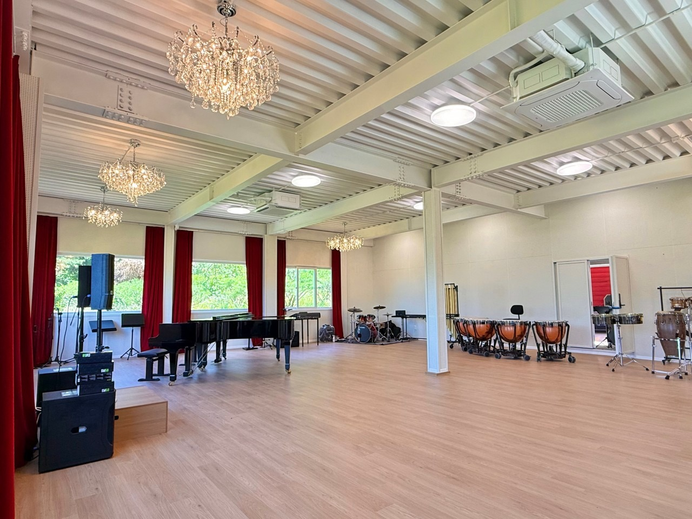
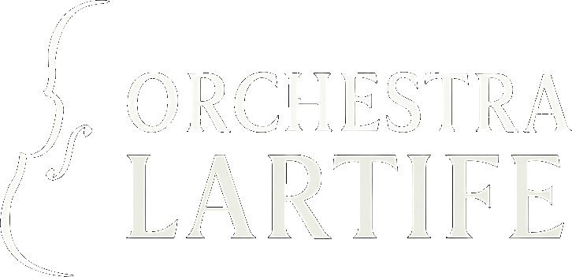
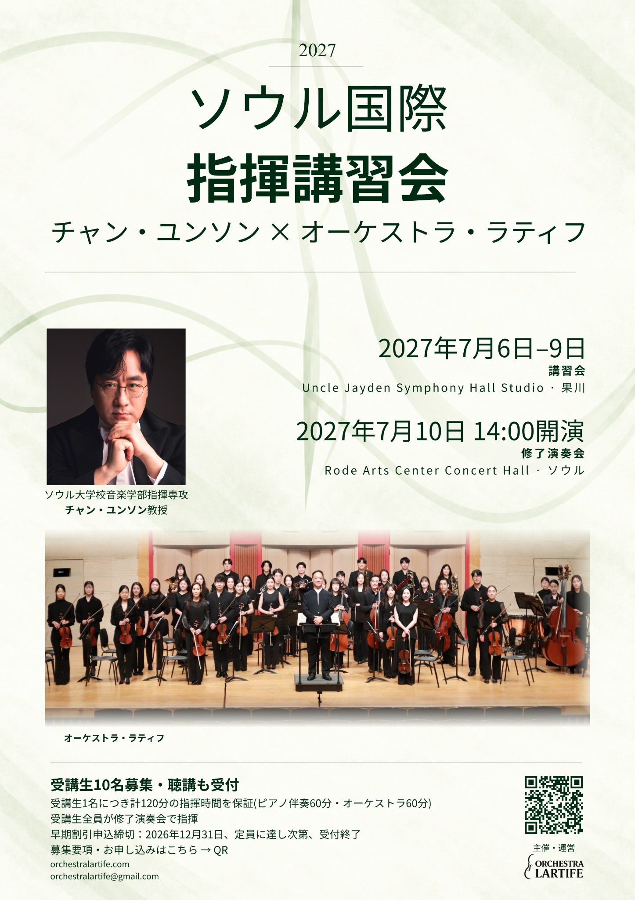
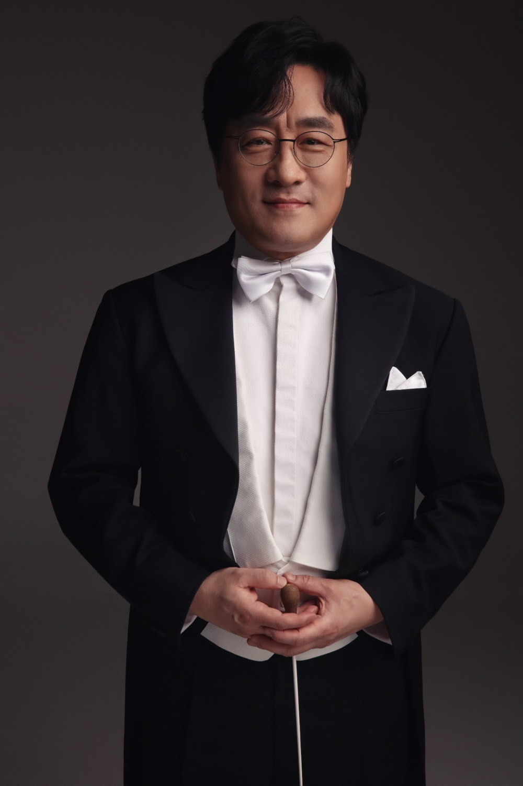
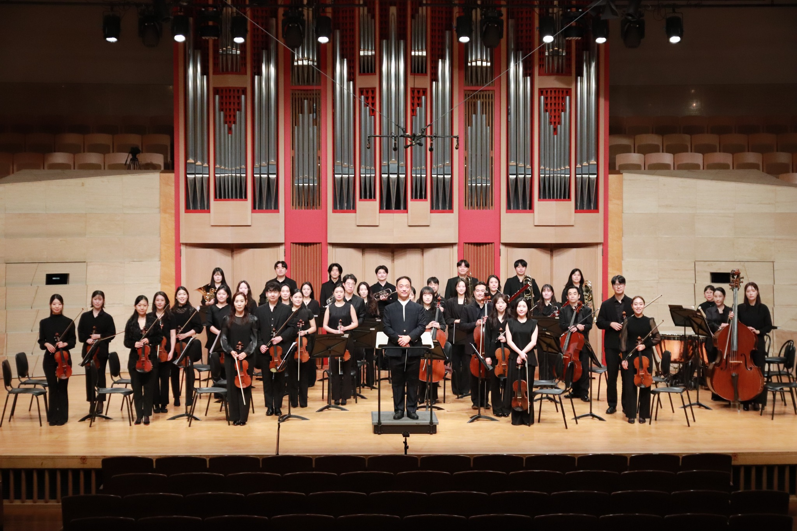

06–09 JULY · GWACHEONUncle Jayden Symphony Hall Studio
韓国 京畿道果川市チュサロ92-19
엉클제이든 심포니홀 스튜디오 · 경기도 과천시 추사로 92-19
地図を見る ↗
参加申込受付中
2027年7月6日–10日
チャン・ユンソン教授の指導のもと、ピアノ伴奏での実習からオーケストラとの実習、修了演奏会へ。オーケストラ・ラティフとともに学ぶ5日間。
2026年10月26日受付開始 · Activeは定員に達し次第締切

公式ポスター · 日本語 ↗THE MASTERCLASS
7月6–7日はピアノ伴奏による実習、8–9日はオーケストラ実習、10日は最終リハーサルと修了演奏会を行います。Active参加者1人につき計120分の指揮実習を保証します。修了演奏会のリハーサルと本番の時間は、この120分に含まれません。

PROFESSOR
ソウル大学校音楽学部指揮専攻教授
チャン・ユンソンはソウル芸術高等学校とソウル大学校で作曲を専攻し、同大学院の指揮専攻課程を修了。ウィーン留学中の1993年、サンクトペテルブルクで開催された第1回プロコフィエフ国際指揮者コンクールで第2位、1997年の東京国際指揮者コンクールで第1位なしの第2位を受賞しました。韓国・日本の楽団で指揮者を歴任し、現在はソウル大学校音楽学部で指揮を教えています。
チャン・ユンソンはソウル芸術高等学校とソウル大学校音楽大学で作曲を学び、同大学大学院で指揮専攻の所定課程を履修した。その後、オーストリアのウィーン国立音楽大学に留学。1993年、ロシア・サンクトペテルブルクで開催された第1回プロコフィエフ国際指揮者コンクールで第2位、1997年には東京国際指揮者コンクールで第2位（第1位なし）を受賞した。
これまでに、ロシアのサンクトペテルブルク・フィルハーモニー、サンクトペテルブルク交響楽団、カメラータ・サンクトペテルブルク、日本の東京交響楽団、大阪フィルハーモニー交響楽団、仙台フィルハーモニー管弦楽団、オーストリアのウィーン・コンツェルトフェライン、クラーゲンフルト交響楽団、ドイツのケムニッツ・ロベルト・シューマン・フィルハーモニー、ニュルンベルク交響楽団、イタリアのローマ交響楽団、スペインのマドリード・サンタ・セシリア・クラシカ管弦楽団、ハンガリーのMÁV交響楽団、チェコのプラハ放送交響楽団、プラハ交響楽団、ブルノ交響楽団、ヤナーチェク・フィルハーモニー、ポーランドのクラクフ放送交響楽団、ウクライナのハルキウ交響楽団、セルビアのベオグラード交響楽団などを指揮している。
ニュルンベルク交響楽団とのドイツ4都市公演、KBS交響楽団との日本公演、マリインスキー歌劇場管弦楽団およびカメラータ・サンクトペテルブルクとの韓国公演、ブルノ・フィルハーモニーおよびヤナーチェク・フィルハーモニーとのオーストリア・クラーゲンフルト、ザンクト・ペルテン公演などを指揮。また、ユニバーサル・バレエ団とともにロンドンのサドラーズ・ウェルズ劇場、シカゴ・リリック・オペラ、バンクーバーのクイーン・エリザベス劇場でバレエ公演を指揮し、ソウル市オペラ団の東京・大阪公演にも参加するなど、交響曲、バレエ、オペラにわたる演奏活動を展開している。
1995年にはクラクフでペンデレツキの交響曲第5番《KOREA》のヨーロッパ初演を指揮。シェーンベルク《グレの歌》、カゼッラの交響曲第2番、ブロッホの交響曲嬰ハ短調の韓国初演をはじめ、韓国の作曲家による多数の新作初演を手がけ、古典から近現代まで幅広いレパートリーで活動を続けている。
オーストリアのNeustudio Bühneでのモーツァルト《カイロの鵞鳥》を皮切りに、同《フィガロの結婚》《ドン・ジョヴァンニ》《コジ・ファン・トゥッテ》《魔笛》、ロッシーニ《結婚手形》《セビリアの理髪師》、フンパーディンク《ヘンゼルとグレーテル》、ドニゼッティ《愛の妙薬》、ヴェルディ《リゴレット》《椿姫》《運命の力》《ナブッコ》、プッチーニ《三部作》《蝶々夫人》《ラ・ボエーム》《トスカ》、ビゼー《カルメン》、ブリテン《夏の夜の夢》、オネゲル《火刑台上のジャンヌ・ダルク》などを指揮。オペラ指揮者としても幅広く活動している。
蔚山、昌原、大田の各市立交響楽団および富川フィルハーモニー管弦楽団の常任指揮者、大阪カレッジ・オペラハウスの専任指揮者、ソウル市立交響楽団の首席客演指揮者、軍浦プライム・フィルハーモニー管弦楽団の専任指揮者などを歴任。日本のカメラータ・レーベルより録音をリリースしている。現在、ソウル大学校音楽大学作曲科指揮専攻教授。
06–10 JULY 2027
| 日付 | 内容 | 時間 · 韓国時間 | 会場 |
|---|---|---|---|
| 2027.07.06 | ピアノ伴奏による指揮実習 | 09:00 オリエンテーション 09:30–12:30 14:00–17:00 | Uncle Jayden Symphony Hall Studio |
| 2027.07.07 | ピアノ伴奏による指揮実習 | 09:30–12:30 14:00–17:00 | Uncle Jayden Symphony Hall Studio |
| 2027.07.08 | オーケストラ指揮実習 | 09:30–12:30 14:00–17:00 | Uncle Jayden Symphony Hall Studio |
| 2027.07.09 | オーケストラ指揮実習 | 09:30–12:30 14:00–17:00 | Uncle Jayden Symphony Hall Studio |
| 2027.07.10 | 最終リハーサル・修了演奏会 | 10:30–13:00 リハーサル 14:00 修了演奏会 | Rode Arts Center Concert Hall |
時間は韓国標準時（KST、日本と同時刻）です。詳細日程と個別の指揮順は運営状況により変更する場合があります。
MOZART & BEETHOVEN
| 作品 | 指定版 |
|---|---|
| W. A. モーツァルト — 歌劇《ドン・ジョヴァンニ》K. 527 序曲 | Breitkopf & Härtel |
| W. A. モーツァルト — 交響曲第35番 ニ長調 K. 385《ハフナー》 | Breitkopf & Härtel |
| L. v. ベートーヴェン —《コリオラン》序曲 Op. 62 | G. Henle Verlag |
| L. v. ベートーヴェン — 交響曲第2番 ニ長調 Op. 36 | Bärenreiter |
Active参加者は4曲すべてをご準備ください。実習では希望作品の指導を受けられます。修了演奏会で指揮する作品・楽章は指導教授が指定します。
PARTICIPATION
お申し込み前に以下の参加条件と韓国語の募集要項PDFをご確認ください。
| 区分 | 参加費 · 韓国ウォン |
|---|---|
| 早期申込 · 2026年12月31日まで | KRW 2,800,000 |
| 通常料金 | KRW 3,000,000 |
| 修了演奏会の公式映像 · 希望者のみ | 60,000ウォン追加 |
公式映像には演奏会全体とご自身の指揮映像が含まれます。合格後、参加費と一緒にお支払いください。修了演奏会当日の個人機器による動画撮影は禁止です。
合格通知のみでは正式登録となりません。支払期限前でも入金確認済みの登録者が10名に達すると締め切ります。未入金の合格者には締切を通知し、追加の入金は受け付けません。支払期限を過ぎると登録資格は失効します。
| キャンセル申請日 | 返金率 |
|---|---|
| 2027年3月31日まで | 100% |
| 2027年4月1日–30日 | 70% |
| 2027年5月1日–31日 | 50% |
| 2027年6月1日以降 | 返金不可 |
指揮専攻者、指揮に関心のある国内外の音楽家および一般の方が対象です。希望日に1日単位、または全5日間でお申し込みいただけます。
| 区分 | 参加費 · 韓国ウォン |
|---|---|
| 1日 | KRW 70,000 |
| 2日 | KRW 140,000 |
| 3日 | KRW 210,000 |
| 4日 | KRW 280,000 |
| 全5日間 | KRW 300,000 |
申込日の授業・リハーサルを聴講できます。7月10日の参加費には修了演奏会のリハーサル見学と本番の鑑賞が含まれます。一般観客の演奏会入場料は30,000ウォンです。
オンライン申込 → 希望日を選択 → メールで支払案内 → 支払 → 入金確認後登録確定
| キャンセル申請日 | 返金率 |
|---|---|
| 2027年6月30日まで | 100% |
| 2027年7月1日–3日 | 70% |
| 2027年7月4日–5日 | 50% |
| 2027年7月6日以降 | 返金不可 |
主催者の都合で中止となった場合、Active・Passive参加費は全額返金します。公式映像の料金は提供前のキャンセルに限り返金します。

2027 · SEOUL INTERNATIONAL CONDUCTING MASTERCLASS
2026年10月26日受付開始 · Activeは定員に達し次第締切